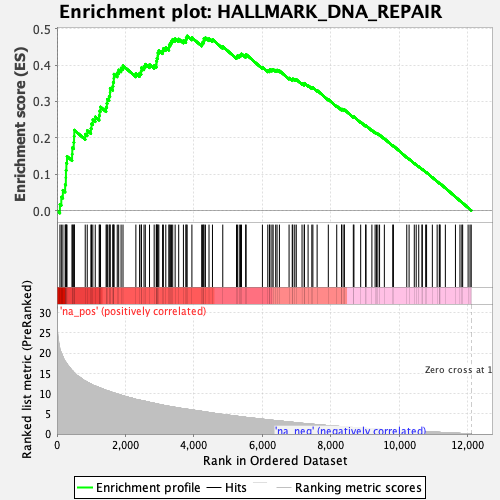
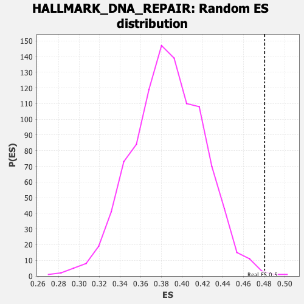

| | | Dataset | gsea_input_PROTECTED |
| Phenotype | NoPhenotypeAvailable |
| Upregulated in class | na_pos |
| GeneSet | HALLMARK_DNA_REPAIR |
| Enrichment Score (ES) | 0.48028213 |
| Normalized Enrichment Score (NES) | 1.2425239 |
| Nominal p-value | 0.003 |
| FDR q-value | 0.17665806 |
| FWER p-Value | 0.585 |
Table: GSEA Results Summary

Fig 1: Enrichment plot: HALLMARK_DNA_REPAIR
Profile of the Running ES Score & Positions of GeneSet Members on the Rank Ordered List
| SYMBOL | RANK IN GENE LIST | RANK METRIC SCORE | RUNNING ES | CORE ENRICHMENT | | 1 | EDF1 | 86 | 20.874 | 0.0172 | Yes |
| 2 | RPA2 | 126 | 19.978 | 0.0373 | Yes |
| 3 | NCBP2 | 172 | 19.084 | 0.0559 | Yes |
| 4 | TP53 | 238 | 17.890 | 0.0713 | Yes |
| 5 | SF3A3 | 259 | 17.690 | 0.0904 | Yes |
| 6 | TAF12 | 262 | 17.643 | 0.1108 | Yes |
| 7 | GTF2H1 | 274 | 17.531 | 0.1304 | Yes |
| 8 | ERCC3 | 292 | 17.303 | 0.1492 | Yes |
| 9 | POLR2D | 441 | 15.653 | 0.1551 | Yes |
| 10 | RFC4 | 447 | 15.628 | 0.1730 | Yes |
| 11 | CANT1 | 489 | 15.233 | 0.1874 | Yes |
| 12 | IMPDH2 | 499 | 15.116 | 0.2043 | Yes |
| 13 | UPF3B | 506 | 15.074 | 0.2214 | Yes |
| 14 | SNAPC5 | 825 | 13.110 | 0.2102 | Yes |
| 15 | POLH | 884 | 12.788 | 0.2203 | Yes |
| 16 | SAC3D1 | 991 | 12.324 | 0.2258 | Yes |
| 17 | NME1 | 1009 | 12.253 | 0.2387 | Yes |
| 18 | UMPS | 1047 | 12.060 | 0.2497 | Yes |
| 19 | POLR1H | 1118 | 11.843 | 0.2577 | Yes |
| 20 | POLB | 1233 | 11.442 | 0.2616 | Yes |
| 21 | TYMS | 1247 | 11.386 | 0.2738 | Yes |
| 22 | SEC61A1 | 1272 | 11.306 | 0.2850 | Yes |
| 23 | HPRT1 | 1435 | 10.768 | 0.2841 | Yes |
| 24 | DAD1 | 1457 | 10.720 | 0.2948 | Yes |
| 25 | GMPR2 | 1471 | 10.690 | 0.3063 | Yes |
| 26 | SSRP1 | 1523 | 10.536 | 0.3143 | Yes |
| 27 | POLA1 | 1549 | 10.468 | 0.3245 | Yes |
| 28 | POLR1C | 1552 | 10.449 | 0.3365 | Yes |
| 29 | LIG1 | 1631 | 10.249 | 0.3420 | Yes |
| 30 | NUDT9 | 1641 | 10.226 | 0.3532 | Yes |
| 31 | PNP | 1661 | 10.167 | 0.3635 | Yes |
| 32 | DUT | 1664 | 10.162 | 0.3752 | Yes |
| 33 | APRT | 1761 | 9.871 | 0.3787 | Yes |
| 34 | SRSF6 | 1803 | 9.765 | 0.3867 | Yes |
| 35 | TAF9 | 1873 | 9.563 | 0.3921 | Yes |
| 36 | NELFE | 1929 | 9.403 | 0.3985 | Yes |
| 37 | POLR2H | 2305 | 8.539 | 0.3772 | Yes |
| 38 | NELFCD | 2414 | 8.351 | 0.3779 | Yes |
| 39 | XPC | 2460 | 8.266 | 0.3838 | Yes |
| 40 | POLR2A | 2467 | 8.253 | 0.3929 | Yes |
| 41 | ERCC8 | 2543 | 8.124 | 0.3962 | Yes |
| 42 | SUPT4H1 | 2581 | 8.059 | 0.4025 | Yes |
| 43 | PCNA | 2704 | 7.814 | 0.4014 | Yes |
| 44 | USP11 | 2840 | 7.575 | 0.3990 | Yes |
| 45 | POLD3 | 2904 | 7.458 | 0.4025 | Yes |
| 46 | TAF1C | 2905 | 7.455 | 0.4112 | Yes |
| 47 | DGCR8 | 2920 | 7.429 | 0.4187 | Yes |
| 48 | TMED2 | 2946 | 7.370 | 0.4252 | Yes |
| 49 | NPR2 | 2948 | 7.367 | 0.4338 | Yes |
| 50 | POLD1 | 2977 | 7.319 | 0.4400 | Yes |
| 51 | MRPL40 | 3086 | 7.115 | 0.4393 | Yes |
| 52 | AGO4 | 3109 | 7.084 | 0.4457 | Yes |
| 53 | BCAM | 3180 | 6.970 | 0.4480 | Yes |
| 54 | POLE4 | 3272 | 6.825 | 0.4484 | Yes |
| 55 | ERCC2 | 3279 | 6.818 | 0.4559 | Yes |
| 56 | ELL | 3314 | 6.763 | 0.4609 | Yes |
| 57 | DGUOK | 3345 | 6.719 | 0.4663 | Yes |
| 58 | NUDT21 | 3382 | 6.662 | 0.4711 | Yes |
| 59 | RFC5 | 3453 | 6.568 | 0.4729 | Yes |
| 60 | ITPA | 3557 | 6.431 | 0.4718 | Yes |
| 61 | RRM2B | 3695 | 6.236 | 0.4676 | Yes |
| 62 | RBX1 | 3769 | 6.142 | 0.4687 | Yes |
| 63 | TARBP2 | 3775 | 6.140 | 0.4755 | Yes |
| 64 | AK3 | 3804 | 6.103 | 0.4803 | Yes |
| 65 | POLR2G | 3943 | 5.934 | 0.4757 | No |
| 66 | ERCC5 | 4229 | 5.584 | 0.4584 | No |
| 67 | GTF2A2 | 4255 | 5.550 | 0.4628 | No |
| 68 | COX17 | 4290 | 5.500 | 0.4664 | No |
| 69 | POM121 | 4293 | 5.495 | 0.4726 | No |
| 70 | CETN2 | 4338 | 5.446 | 0.4753 | No |
| 71 | TAF13 | 4443 | 5.293 | 0.4728 | No |
| 72 | SMAD5 | 4544 | 5.170 | 0.4705 | No |
| 73 | MPG | 4845 | 4.814 | 0.4511 | No |
| 74 | GTF2H5 | 5247 | 4.385 | 0.4227 | No |
| 75 | CSTF3 | 5273 | 4.350 | 0.4257 | No |
| 76 | RALA | 5327 | 4.311 | 0.4263 | No |
| 77 | STX3 | 5364 | 4.260 | 0.4283 | No |
| 78 | TAF10 | 5392 | 4.227 | 0.4310 | No |
| 79 | PRIM1 | 5515 | 4.107 | 0.4256 | No |
| 80 | DDB2 | 5526 | 4.089 | 0.4295 | No |
| 81 | ADRM1 | 6004 | 3.644 | 0.3939 | No |
| 82 | ELOA | 6161 | 3.505 | 0.3850 | No |
| 83 | NFX1 | 6209 | 3.444 | 0.3851 | No |
| 84 | GTF2B | 6224 | 3.432 | 0.3879 | No |
| 85 | ALYREF | 6282 | 3.390 | 0.3871 | No |
| 86 | ADA | 6317 | 3.358 | 0.3882 | No |
| 87 | RAE1 | 6392 | 3.301 | 0.3859 | No |
| 88 | GUK1 | 6432 | 3.261 | 0.3864 | No |
| 89 | GTF2F1 | 6501 | 3.205 | 0.3845 | No |
| 90 | ZNF707 | 6783 | 2.961 | 0.3645 | No |
| 91 | AAAS | 6876 | 2.889 | 0.3602 | No |
| 92 | GTF2H3 | 6892 | 2.871 | 0.3623 | No |
| 93 | RNMT | 6949 | 2.820 | 0.3609 | No |
| 94 | AK1 | 6993 | 2.779 | 0.3606 | No |
| 95 | EIF1B | 7162 | 2.623 | 0.3496 | No |
| 96 | DDB1 | 7227 | 2.582 | 0.3473 | No |
| 97 | RFC2 | 7230 | 2.582 | 0.3501 | No |
| 98 | ZWINT | 7339 | 2.506 | 0.3440 | No |
| 99 | ERCC1 | 7448 | 2.416 | 0.3378 | No |
| 100 | VPS37B | 7479 | 2.395 | 0.3381 | No |
| 101 | TAF6 | 7603 | 2.291 | 0.3305 | No |
| 102 | PDE4B | 7930 | 2.058 | 0.3057 | No |
| 103 | DCTN4 | 8176 | 1.904 | 0.2874 | No |
| 104 | RPA3 | 8317 | 1.821 | 0.2779 | No |
| 105 | POLR1D | 8327 | 1.814 | 0.2792 | No |
| 106 | REV3L | 8388 | 1.773 | 0.2763 | No |
| 107 | NME3 | 8399 | 1.768 | 0.2775 | No |
| 108 | CLP1 | 8661 | 1.601 | 0.2576 | No |
| 109 | ADCY6 | 8679 | 1.587 | 0.2580 | No |
| 110 | POLR3C | 8876 | 1.476 | 0.2434 | No |
| 111 | POLL | 9020 | 1.387 | 0.2330 | No |
| 112 | GTF3C5 | 9032 | 1.380 | 0.2337 | No |
| 113 | BRF2 | 9204 | 1.289 | 0.2210 | No |
| 114 | POLR3GL | 9298 | 1.225 | 0.2146 | No |
| 115 | SNAPC4 | 9337 | 1.205 | 0.2129 | No |
| 116 | NELFB | 9378 | 1.178 | 0.2109 | No |
| 117 | POLR2I | 9428 | 1.153 | 0.2081 | No |
| 118 | ARL6IP1 | 9568 | 1.071 | 0.1978 | No |
| 119 | VPS28 | 9813 | 0.949 | 0.1785 | No |
| 120 | FEN1 | 9833 | 0.941 | 0.1780 | No |
| 121 | SDCBP | 10223 | 0.783 | 0.1464 | No |
| 122 | SUPT5H | 10291 | 0.756 | 0.1417 | No |
| 123 | NT5C | 10443 | 0.692 | 0.1299 | No |
| 124 | CDA | 10499 | 0.671 | 0.1261 | No |
| 125 | RFC3 | 10573 | 0.642 | 0.1207 | No |
| 126 | RAD52 | 10668 | 0.599 | 0.1136 | No |
| 127 | POLD4 | 10676 | 0.597 | 0.1137 | No |
| 128 | HCLS1 | 10776 | 0.555 | 0.1061 | No |
| 129 | NT5C3A | 10802 | 0.545 | 0.1046 | No |
| 130 | NME4 | 10971 | 0.478 | 0.0911 | No |
| 131 | MPC2 | 11111 | 0.418 | 0.0800 | No |
| 132 | GPX4 | 11173 | 0.394 | 0.0754 | No |
| 133 | SURF1 | 11189 | 0.387 | 0.0746 | No |
| 134 | ERCC4 | 11195 | 0.384 | 0.0746 | No |
| 135 | TK2 | 11351 | 0.317 | 0.0620 | No |
| 136 | BCAP31 | 11646 | 0.192 | 0.0377 | No |
| 137 | POLR2J | 11778 | 0.140 | 0.0269 | No |
| 138 | POLR2K | 11833 | 0.117 | 0.0225 | No |
| 139 | POLR2C | 11857 | 0.104 | 0.0207 | No |
| 140 | POLA2 | 12016 | 0.040 | 0.0076 | No |
| 141 | TSG101 | 12072 | 0.015 | 0.0030 | No |
| 142 | POLR2E | 12107 | 0.001 | 0.0002 | No |
Table: GSEA details [plain text format]

Fig 2: HALLMARK_DNA_REPAIR: Random ES distribution
Gene set null distribution of ES for HALLMARK_DNA_REPAIR